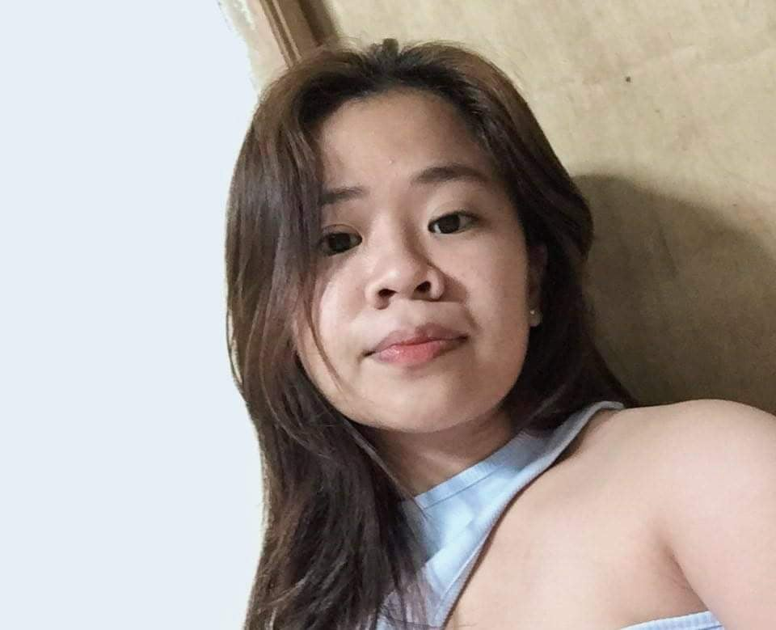
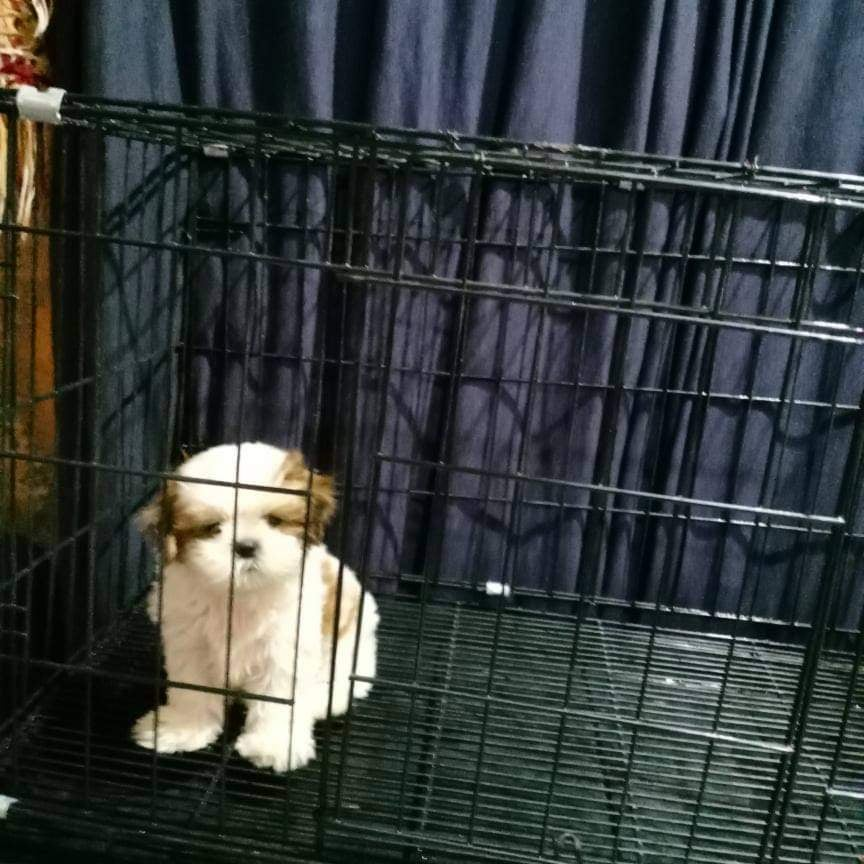

A good man is the one who takes care of the feelings of people around him. This article has several man quotes for all good men. Anyone aspiring to become a good man can find the required motivation by reading these inspirational quotes by famous personalities on how to be a truly good man. At times, the pressure of being a good man can feel a little much, no matter how much you want to become a good man. For all such men, who want to become a good man and achieve the things they want, our list of good man quotes can act as the required push. Read these good man quotes to fill yourself with positivity and inspiration to start working for all the things you want and to treat those around you with the love and care they deserve. If you like our list of good man quote ideas, and want to read more such quotes, then check out these [real men quotes] and power quotes for more great quote ideas. But for now, let us dive into these quotations about great men.
Being able to share your little moments of every day with the woman of your dream is truly a blessing! If you feel lucky to be able to share your journey with her, waste no time and let her know right away! Tell her how much she means to you! If your word gets stuck midway, no worries for we are here to help! Here we have some special love messages for girlfriend and sweet message for girlfriend to open up your heart towards your girl and show how much she means to you. No matter how many years pass, I cannot stop falling in love with you! You are everything that I desire for in life, I promise to love you all my life. Thanks for being there for me always, I need you to be in my life forever!
Short of the love between a parent and their child, there may not be another love as pure and wonderful as the love between a person and their dog. Nurturing, attentive, and always up for playtime, dogs are a quintessential part of country life, and we can't picture our lives without at least one. All of the dog quotes we've gathered here aren't just intended to make you happy; they'll also remind you of the special bond of friendship we have with our dogs. From funny quotes about dogs (like Elayne Boosler's "My fashion philosophy is, if you're not covered in dog hair, your life is empty") to quotes about the bond between dog lovers and their pups ("The love of a dog is a pure thing. He gives you a trust which is total. You must not betray it," Michel Houellebecq reminds us), there's something here for just about everyone. The best part? Most of the best quotes about dogs we've compiled here double as great dog Instagram captions—and they're the perfect thing to write in a card accompanying any gifts for dog lovers.